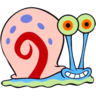

Install this app by selecting "Add to Home screen" from your browser menu
Nickelodeon, SpongeBob SquarePants and all related titles, logos, and characters are trademarks of Viacom International Inc. SpongeBob SquarePants created by Stephen Hillenburg. FAIR USE NOTICE: This site may contain copyrighted material the use of which has not always been specifically authorized by the copyright owner. Such material is made available to advance understanding of ecological, political, human rights, economic, democracy, scientific, moral, ethical, and social justice issues, etc. It is believed that this constitutes a 'fair use' of any such copyrighted material as provided for in section 107 of the US Copyright Law. In accordance with Title 17 U.S.C. Section 107, this material is distributed without profit to those who have expressed a prior general interest in receiving similar information for research and educational purposes. If you wish to use copyrighted material for purposes of your own that go beyond 'fair use', you must obtain permission from the copyright owner.